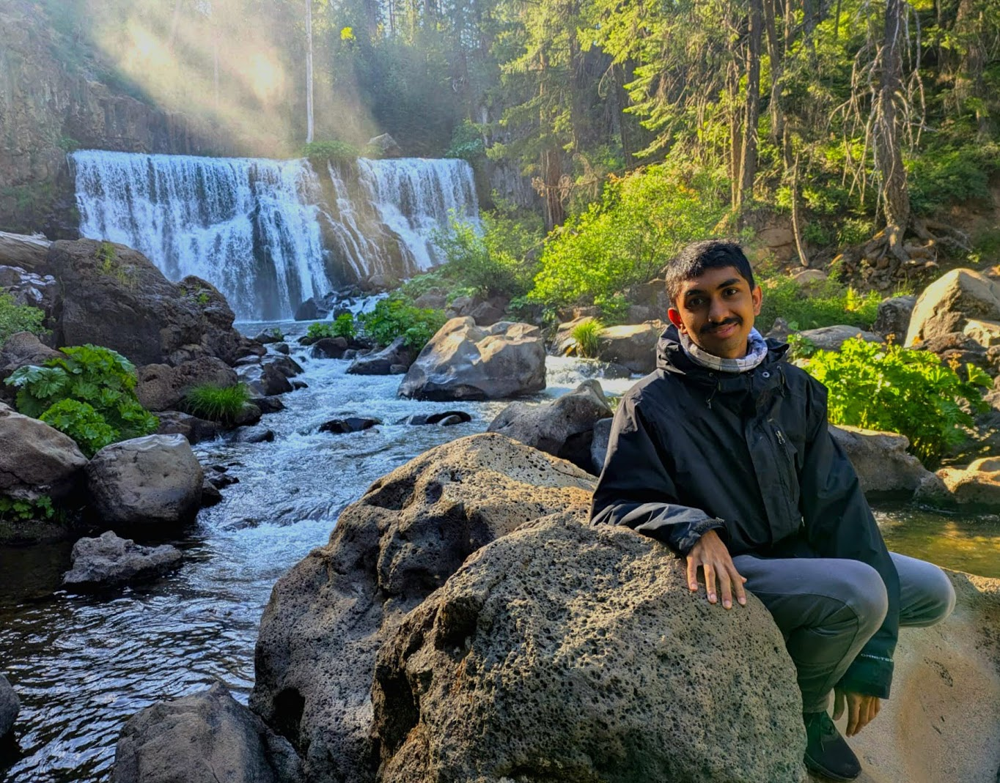
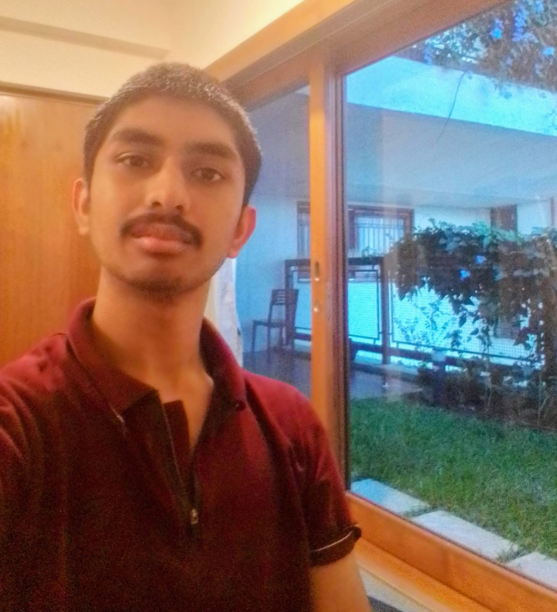
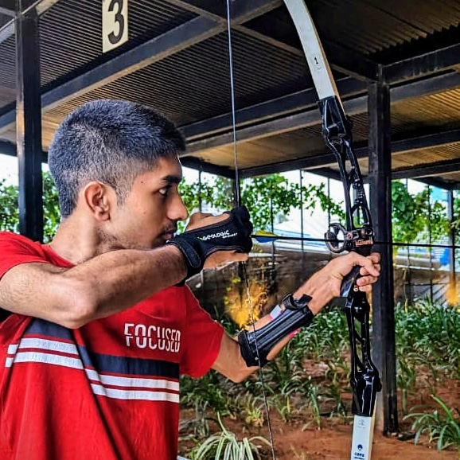
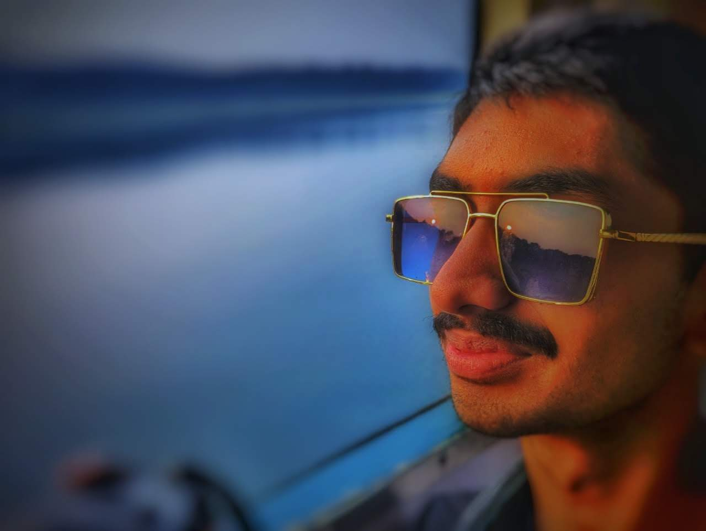

Gallery
Profile:

My Room:

Diwali Celebrations:
At Play Arena in Bengaluru:

Lake View at Bhadra river tern:

Tennis Court at my apartment:

Tech products and AI enthusiast
First-year B.Tech Computer Science student at IIIT Hyderabad, passionate about using technology to solve real-world problems, especially in AI and Machine Learning.
I'm a quick learner with a curious mind, adaptable to new technologies, and deeply motivated to build solutions that scale and make an impact.
Hi! I'm Aryama Vinay Murthy, a first-year B.Tech Computer Science student at IIIT Hyderabad (Class of 2028). I'm from Bengaluru, where I've grown up and built the foundation of my curiosity and drive to innovate.
I aspire to be an entrepreneur. I have a strong interest in startups, business and management. I've always been excited about creating impactful products and envision starting my own company in the future.
As a student passionate about technology and innovation, I've developed a solid foundation across multiple domains, with a focus on AI, robotics, and full-stack development. I approach most of my projects using AI-assisted coding tools and copilots, enabling rapid prototyping and efficient development even in areas where I'm still gaining depth.
Started coding and prototyping with robotics tools in 5th–6th grade with Python, took a 3-year break for JEE prep, and resumed with a new AI-first approach at IIIT Hyderabad. I focus on concepts, abstraction, and building products, using AI tools to code efficiently. Not interested in low-level intricacies—I'm a hard worker driven by innovation and outcomes.
Profile:

My Room:

Diwali Celebrations:
At Play Arena in Bengaluru:

Lake View at Bhadra river tern:

Tennis Court at my apartment:
Click the button below to download my CV.
Download CV (PDF)